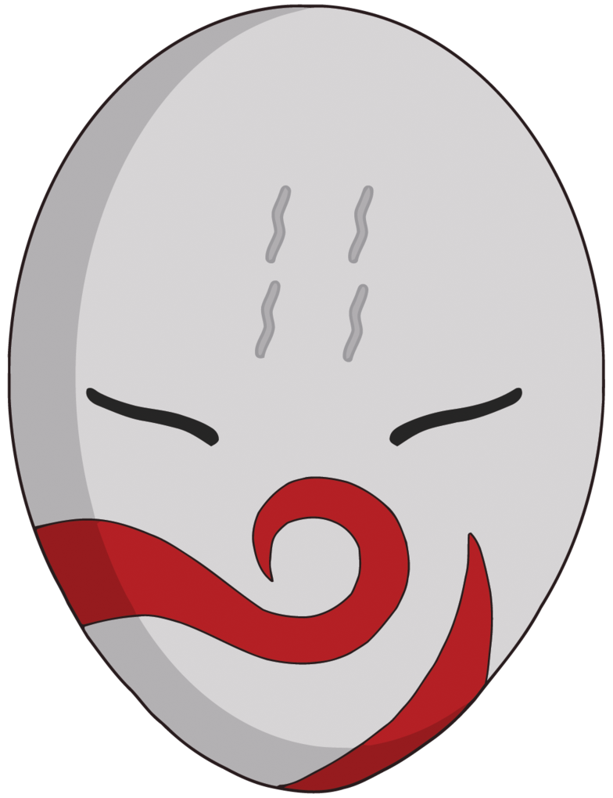

Hier erfahren Sie mehr über die Entstehung meines Charakters und wie ich es entwickelt habe.

Bildquelle: imgbin.com
Inspiration: Maske von Haku aus Naruto
Eigene Weiterentwicklung, eigenes Logo, eigene Charakteridee und Nachbearbeitung.


Zuerst habe ich meine eigene Maske gezeichnet.

Danach habe ich daraus eine digitale Version gemacht.

Skin erstellt auf: novaskin.me
Aus der Maske und den eigenen logo, habe ich mir mein eigenen Minecraft-Skin erstellt.

Anschließend habe ich mithilfe von ChatGPT eine Charakter-Visualisierung auf Basis meiner eigenen Designs erstellt.


Das generierte Bild wurde anschließend in GIMP überarbeitet und angepasst.


Hier ist nochmal ein Vergleich zwischen generiert und bearbeitet.


Daraus entstand schließlich die finale Figur „NIOZCO“.